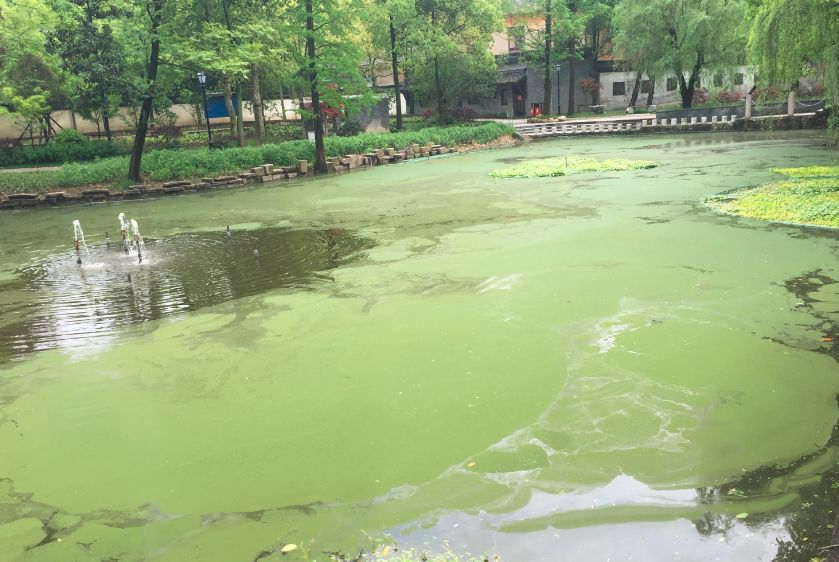
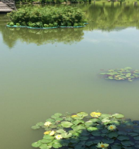
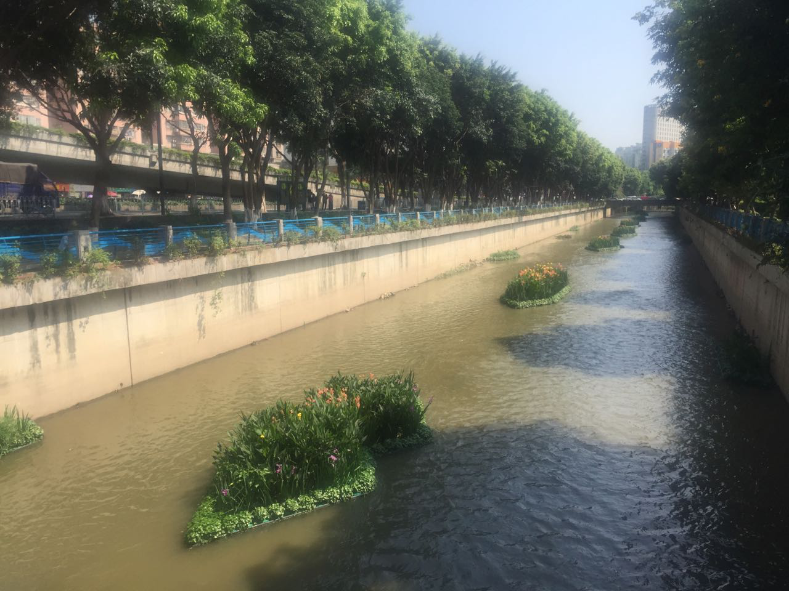

项目介绍
桐乡市乌镇镇市河生态修复工程
乌镇市河全长3.4公里，宽约50米，是贯穿整个乌镇的最重要的河道，也是乌镇人民的母亲河。治理前水质指标为V类水，且因是京杭大运河的支流，泥沙含量高，水体透明度差。我们团队秉着因地制宜，从实际出发的原则，利用截污纳管、生态浮岛、生物填料、太阳能曝气、生态基质（专有技术）、围堰沉沙等技术真正的做到了科技治水、生态治水、智慧治水。不仅有效的将乌镇市河的水质从V类水提升到III类水体，还营造了良好的景观环境，得到了当地人民的一致赞同。


桐乡市乌镇人民公园生态修复项目
乌镇人民公园位于乌镇东栅附近，已有60多年的历史。公园内水体面积有6000平方，平均水深约3米。由于周围种植大量的植物，施用了过量的化肥，下雨时随着雨水一起流入到水体中，并且水体封闭不流动，造成了严重的富营养化。我们根据乌镇人民公园的实际情况，制定了一系列的措施，包括：水体自动循环、生态修复、底泥钝化、生态缓冲带等，成功的将水质从V类水体提升到了III类。



湖州市德清农村河道生态修复工程
新安西贡塘港位于新安镇舍北村内，是一条断头河。由于与其连通的主体河道水体中泥沙含量较大，导致西贡塘港水体透明度较低，水质和水生态不甚理想。此外，该河段现有水景观比较单一，且与其岸边地带整体景观不匹配。考虑到西贡塘港特点特别是水质、水生态和水景观现状，同时兼顾到生态文化建设、科技示范推广等需求，本项目拟组合运用增强型生态浮床、生态栅、太阳能曝气增氧以及岸坡植物多样化修复等工程技术手段加以深度修复，在短时间内提高河道水体自净能力，同时营造出良好的生态与景观效果。


临安东湖生态修复项目
东湖位于浙江农林大学内，主要存在入湖污染较重、补水量较小、水力效率较低、水体自净能力较差等问题，导致东湖水体长期处于中度富营养化状态（主要是氮、磷浓度偏高），局部水域经常爆发“水华”。经过调查分析，根据东湖的实际情况，综合考虑污染特点、水质状况、水生态退化原因、功能需求等因素，本项目拟组合应用生物净化槽、在线智能检测、生态沟渠、生态浮床、浅滩植物多样性修复、推流式曝气增氧等水环境治理技术，力求改善水质和水生态，提高水体自净能力，同时营造出良好景观。

沙河涌（兴华街道段）生态修复与景观营建示范工程
沙河涌位于广州天河区兴华街道。项目遵循海绵城市和生态文明理念，采用橡胶坝蓄水、安设生态浮岛等工程设施，优选和应用对氮、磷、重金属等污染物具有高效净化能力的优势水生植物和生态型基质，以此提高河涌生态水位，构筑亲水生物栖息地，增强河涌生命力和自我净化能力，改善河涌水质和水生态，丰富河涌景观多样性。
